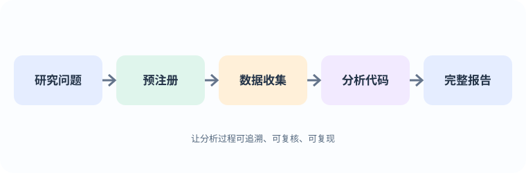

第18章：统计伦理与最佳实践
大家好，我是你们的讲师。这一章可能是整个课程中最"沉重"但也是最"必须"的一章。前面17章，我们学了各种统计方法、技巧和工具。但学了这么多之后，一个更根本的问题出现了：我们该如何负责任地使用这些工具？
本章学习目标
- 数据造假
- 选择性报告
- 预注册

交互实验：研究透明度检查清单
勾选研究透明度实践，检查是否覆盖预注册、数据来源、分析代码和完整报告。
交互控件加载后，可调整参数并观察统计量的变化。
统计学是一把双刃剑。用得好，它可以帮我们从数据中找到真相、做出更好的决策。用得不好（甚至故意滥用），它可能误导大众、浪费资源、甚至伤害生命。这一章，我们要直面统计学的"暗面"——不仅是提醒你避坑，更是希望你在今后每一次做数据分析时，都能在心中有一根红线。
18.1 数据造假的真实案例（Schön丑闻等）
数据造假是统计学伦理问题中最严重的一类。它不是p-hacking那种"灰色地带"，而是赤裸裸的——篡改或编造数据。这不是学术界的边缘现象，而是曾经震动整个科学界的重大问题。
先来看一个典型案例——Diederik Stapel，荷兰蒂尔堡大学的社会心理学教授。他在超过30篇论文中直接编造数据，他的"研究"涵盖了刻板印象、自我认知、社会判断等多个领域。他后来承认，自己只是"用Excel编造了数据"——没有任何实际实验。
Stapel的案例看起来极端，但它揭示了一个系统性问题：学术界的"发表或灭亡"（Publish or Perish）文化让很多研究者走上了危险的道路。当职业生涯依赖于发表数量和新奇发现时，诚实反而变成了"效率低下的选择"。
另一个更广为人知的案例是Schön丑闻。2000年代初，德国物理学家Jan Hendrik Schön在贝尔实验室工作时，在顶级期刊（《Nature》《Science》）上发表了一系列轰动性的论文，宣称在有机电子领域取得了突破性进展。然而，其他研究者始终无法重复他的结果。调查发现，Schön的论文中存在多处数据造假——同一组数据在不同的论文中"被用于"完全不同的实验。最终，他的所有相关论文被撤回，他本人也离开了学术界。
| 造假案例 | 领域 | 手法 | 后果 |
|---|---|---|---|
| Diederik Stapel | 社会心理学 | 直接编造实验数据 | 58篇论文撤回，职位被罢免 |
| Jan Hendrik Schön | 凝聚态物理 | 重复使用数据、编造结果 | 28篇论文撤回，学术生涯终结 |
| Marc Hauser | 进化生物学 | 选择性报告、篡改数据 | 哈佛大学辞职，多篇论文撤回 |
| Andrew Wakefield | 医学 | 篡改病例数据（MMR疫苗与自闭症） | 论文撤回，行医执照吊销 |
⚠️ Wakefield案的灾难性后果：Andrew Wakefield在1998年发表的《柳叶刀》论文声称MMR（麻疹-腮腺炎-风疹）疫苗与自闭症有关。这篇论文是基于12个儿童的高度选择性数据和伦理违规的实验。虽然它在2010年被撤回，但造成的伤害已经无法挽回——疫苗接种率大幅下降，导致多国爆发了本可避免的麻疹疫情，多名儿童因此死亡。这是统计造假导致真实生命损失的最惨痛案例之一。
18.2 选择性报告：只报告"显著"的结果
选择性报告（Selective Reporting）是比直接数据造假更常见但更隐蔽的问题。研究者可能不会篡改数据，但他们会选择性地展示结果——报告显著的发现、隐瞒不显著的发现。
选择性报告有多种形式：
- 只报告阳性结果：做了10个分析，只报告显著的2个
- 改变分析窗口：A/B测试看了7天，结果不显著；改看14天，显著了——报告"14天结果"
- 选择性分组：总体没效应，但"女性（20-35岁）"有效应——报告这个子组
- 选择性调整：不控制协变量不显著，控制了某些协变量显著了——只报告调整后的结果
- 选择性排除：排除了某些"异常值"后结果显著
在商业环境中，选择性报告同样普遍——我把它称为"只为好消息报喜"综合征：
# 模拟选择性报告的后果
import numpy as np
from scipy import stats
np.random.seed(42)
# 假设你在实验中测试了20个指标
n_metrics = 20
n_samples = 100
# 但真正有效的指标只有1个（真实效应=0.5个标准差）
true_effect = np.zeros(n_metrics)
true_effect[0] = 0.5
results = []
for i in range(n_metrics):
control = np.random.normal(100, 15, n_samples)
treatment = np.random.normal(100 + 15 * true_effect[i], 15, n_samples)
t_stat, p_val = stats.ttest_ind(control, treatment)
results.append({'指标': i, 'p值': p_val, '真实效应': true_effect[i]})
# 选择性报告：只报告p<0.05的结果
p_values = [r['p值'] for r in results]
significant_indices = [i for i, p in enumerate(p_values) if p < 0.05]
print(f"在{n_metrics}个指标中，'显著'的有{len(significant_indices)}个")
print(f"其中真正有效的是：指标0 (p={p_values[0]:.4f})")
if len(significant_indices) > 1:
print(f"其他'显著'的指标都是虚假阳性：")
for idx in significant_indices[1:]:
print(f" 指标{idx}: p={p_values[idx]:.4f}（真实效应={true_effect[idx]}）")
print("\n如果只报告'显著'的指标而不提做了多少次比较：")
print(f"读者会以为所有'显著'的指标都是真实的发现")
print(f"但实际只有{1}/{len(significant_indices)}是真实的（如果至少有一个显著的话）")选择性报告 vs. 诚实报告：好的分析报告会明确告诉读者：(1) 我做了多少次比较；(2) 哪些分析是事先计划的（confirmatory），哪些是事后探索的（exploratory）；(3) 所有结果——包括不显著的结果。我常跟团队说：一个统计报告应该像新闻报道——同时呈现支持和反对的证据，而不是像公关稿——只挑好的说。
18.3 预注册（Preregistration）：锁定分析计划
从前面的讨论中，你可能已经意识到：当分析者和数据"互相看对眼"时，几乎任何结果都能被制造出来。这就是为什么近年来预注册（Preregistration）运动在学术界迅速发展。
预注册是指在收集数据之前，将研究设计、假设、分析方法、样本量等关键信息登记在公共平台上（如Open Science Framework、ClinicalTrials.gov等）。这就像做实验之前写一份详细的"研究计划书"——把它公之于众，让所有人看到你的承诺。
预注册的好处：
- 区分确认性分析和探索性分析：预注册的分析是"确认性"的，事后发现的是"探索性"的
- 减少p-hacking：因为分析计划已锁定，你不能事后"调整"方法
- 减少选择性报告：预注册列明了所有测量指标，不能只挑显著的报告
- 减少HARKing：假设在数据前已注册，不能事后编造
即使在A/B测试的商业场景中，预注册的思想也非常有价值：
| 学术预注册 | 商业A/B测试"预注册" |
|---|---|
| 在OSF上注册研究方案 | 在实验启动前写好分析备忘录 |
| 明确主要假设和分析方法 | 明确核心评价指标（primary metric） |
| 确定样本量（功效分析） | 确定最小检测效应（MDE）和运行时长 |
| 列出所有测量指标 | 列出所有监控指标，区分主要/次要 |
| 指定排除标准 | 指定数据清洗规则（如排除爬虫流量） |
实践建议：即使你的团队不做正式的预注册，我强烈建议你在每次数据分析前写一份"分析备忘录"——用1-2页纸写下：你的假设是什么？分析流程是什么？主要指标是什么？排除标准是什么？写完把它发给同事或存档。这个小习惯可以极大地减少无意识的p-hacking和选择性报告。我本人已经坚持这个习惯超过10年——每次打开一个分析项目，我都在正式coding之前写备忘录。
18.4 开放科学运动：数据共享、代码公开
开放科学（Open Science）是近年来应对可重复性危机的最重要运动之一。它的核心理念是：科学研究应该是透明的、可重复的、可验证的。
开放科学包含几个关键要素：
- 开放数据（Open Data）：将原始数据（脱敏后）公开发布，让其他人可以验证分析结果
- 开放代码（Open Code）：将分析代码公开发布，让其他人可以重现你的分析流程
- 开放材料（Open Materials）：公开实验材料、问卷、操作手册等
- 预印本（Preprints）：在研究正式发表前公开结果，增加学术交流速度
- 注册报告（Registered Reports）：在研究开始前评审研究方案，而非结果
其中注册报告（Registered Reports）是一个特别有创意的机制：期刊在你知道结果之前先评审你的研究方案。如果方案被接受，期刊就"承诺"发表你的结果——无论结果是什么（显著或不显著）。这直接消除了发表偏倚！
在商业环境中，虽然你不能公开所有内部数据，但开放科学的理念可以转化为：
- 可复现的报表：自动化报表，确保数据到结果的过程完全透明
- 代码审查：数据分析代码要有同行评审（peer review），就像软件工程一样
- 版本控制：数据和代码都用git管理，所有变化有记录
- 敏感分析：报告中对关键分析做敏感性分析，展示结论对假设的依赖程度
# 开放科学式分析的示例：透明、可复现的报告架构
import pandas as pd
import numpy as np
from scipy import stats
# 好的分析实践：所有步骤具有透明性
class TransparentAnalysis:
"""一个可复现的数据分析示例"""
def __init__(self, data_path, seed=42):
"""第1步：明确数据来源"""
self.data_path = data_path
self.seed = seed
np.random.seed(seed)
print(f"[分析备忘录] 数据来源：{data_path}")
print(f"[分析备忘录] 随机种子：{seed}")
def exclusion_criteria(self, df):
"""第2步：明确排除标准（在分析前指定！）"""
n_before = len(df)
# 排除条件（预注册的）
df = df[df['age'] >= 18] # 只保留成年被试
df = df[df['completion_time'] < 3600] # 完成时间超过1小时的排除
n_after = len(df)
print(f"[数据清洗] 排除前：{n_before}，排除后：{n_after}")
print(f"[数据清洗] 排除比例：{(n_before-n_after)/n_before:.1%}")
return df
def primary_analysis(self, df):
"""第3步：执行主要分析（预注册的）"""
group_a = df[df['group'] == 'control']['outcome']
group_b = df[df['group'] == 'treatment']['outcome']
t_stat, p_val = stats.ttest_ind(group_a, group_b)
effect_size = (group_b.mean() - group_a.mean()) / group_a.std()
print(f"\n[主要分析结果]")
print(f" 对照组均值：{group_a.mean():.2f} (SD={group_a.std():.2f})")
print(f" 实验组均值：{group_b.mean():.2f} (SD={group_b.std():.2f})")
print(f" t统计量：{t_stat:.3f}")
print(f" p值：{p_val:.4f}")
print(f" 效应量（Cohen's d）：{effect_size:.3f}")
# 诚实报告置信区间
ci = stats.t.interval(0.95, df=len(group_a)+len(group_b)-2,
loc=group_b.mean()-group_a.mean(),
scale=np.sqrt(group_a.var()/len(group_a) + group_b.var()/len(group_b)))
print(f" 均值差的95%置信区间：[{ci[0]:.2f}, {ci[1]:.2f}]")
return p_val, effect_size
# 使用示例（需要有实际数据）
print("透明分析框架 v1.0 - 使用前请填写分析备忘录")18.5 负责任的数据分析实践清单
作为本章的总结，我给你列一份"负责任的数据分析师实践清单"。每次做完一个分析，用这份清单检查一下：
| 类别 | 问题 | 自查 |
|---|---|---|
| 设计阶段 | 主要假设是否在分析前明确写下？ | ☐ |
| 主要指标是否预先指定？ | ☐ | |
| 样本量/功效分析是否提前完成？ | ☐ | |
| 分析阶段 | 是否报告了所有检验的结果（包括不显著的）？ | ☐ |
| 是否处理了多重比较问题？ | ☐ | |
| 数据排除标准是否在分析前指定？ | ☐ | |
| 分析代码是否可复现（版本控制）？ | ☐ | |
| 报告阶段 | 是否清晰区分了确认性分析和探索性分析？ | ☐ |
| 是否报告了效应大小和置信区间（不仅仅是p值）？ | ☐ | |
| 是否做了敏感性分析来检验结论的稳健性？ | ☐ | |
| 伦理维度 | 分析结果是否可能被误解或滥用？ | ☐ |
| 数据隐私和保密性是否得到保护？ | ☐ |
我的个人信条：作为从业近20年的数据人，我有一条最重要的准则——"永远不要让你的结论超出数据的支撑范围"。这听起来简单，但做起来极难。因为每当你花了一个月分析数据、建立模型、调试代码，你本能地希望得到一个"漂亮的、显著的结果"。正是这种心理，让p-hacking、选择性报告甚至直接造假变得如此有诱惑力。每当我觉得自己快要"说服自己接受某个结果"时，我就问一个反问题："如果结果是相反的，我会同样坦然地报告吗？"。如果答案是否定的——那我可能就在不知不觉中滑向了偏差。
好，这一章我们讨论了统计伦理中最重要的话题——从Schön、Stapel、Wakefield等数据造假案例的惨痛教训，到选择性报告的灰色地带，再到预注册和开放科学带来的解决方案，最后给你一份可以贴在工位上的"负责任分析实践清单"。
到现在为止，我们已经完成了本教程的"基础篇"——从什么是统计学开始，一路走过了描述统计、概率论、假设检验、回归分析、p值争议、多重比较、因果推断，直到今天的统计伦理。下一章，我们将进入"进阶篇"——第19章：多元线性回归。如果说简单线性回归是你的一把瑞士军刀，多元回归就是一套完整的工具箱——让你能同时处理多个变量、控制混杂、做出更精确的预测。下次见！
本章小结
科学可信度来自透明的研究过程和可核验的证据链。